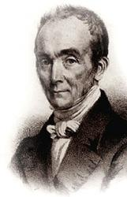

|
|
|
|
|
讚美詩(新編) |
|
https://www.zanmeishige.com/tab/13858.html?songbook=1&index=185
|
|
|
|
|

https://youtu.be/I2i5fu7CGXw
| Short Name: | Philip Doddridge |
| Full Name: | Doddridge, Philip, 1702-1751 |
| Birth Year: | 1702 |
| Death Year: | 1751 |
Philip Doddridge (b. London, England, 1702; d. Lisbon, Portugal, 1751) belonged to the Non-conformist Church (not associated with the Church of England). Its members were frequently the focus of discrimination. Offered an education by a rich patron to prepare him for ordination in the Church of England, Doddridge chose instead to remain in the Non-conformist Church. For twenty years he pastored a poor parish in Northampton, where he opened an academy for training Non-conformist ministers and taught most of the subjects himself. Doddridge suffered from tuberculosis, and when Lady Huntington, one of his patrons, offered to finance a trip to Lisbon for his health, he is reputed to have said, "I can as well go to heaven from Lisbon as from Northampton." He died in Lisbon soon after his arrival. Doddridge wrote some four hundred hymn texts, generally to accompany his sermons. These hymns were published posthumously in Hymns, Founded on Various Texts in the Holy Scriptures (1755); relatively few are still sung today.
Bert Polman
Tune Information
| Title: | GRATITUDE (Bost) |
| Arranger: | Thomas Hastings (1837) |
| Composer: | Paul A. Bost |
| Meter: | 8.8.8.8 |
| Incipit: | 55133 53247 1 |
| Key: | E♭ Major |
| Copyright: | Public Domain |
| Short Name: | Ami Bost |
| Full Name: | Bost, Ami, 1790-1874 |
| Birth Year: | 1790 |
| Death Year: | 1874 |
Rev. Paul Ami Isaac David Bost,

was born on June 10, 1790 in Geneva, Switzerland. He sudied theology at the Moravian Institute at Neuwied and at the University of Geneva. He was an itinerant preacher in Switzerland, Germany and France. In 1825, he co-founded the Reformed Free Church of Geneva. From 1828-37 he worked as an evangelist in Carouge, After a brief pastorate at Asnires and Bourges in France, he was appointed chaplain of the prison of the Maison Centrale at Melun, where he remained until 1848, then lived in Geneva. He died on December 24, 1874 in Prigonrieux, Aquitaine, France.
© The Cyber Hymnal™ (hymntime.com/tch)
第185首 恭行婚礼歌 Today we meet with joyful hearts _多德里奇
经文：“人要离开父母，与妻子连合，二人成为一体”(弗5：31)。
这首诗是英国独立派著名牧师多德里奇(事略参阅第49首)写的。
多德里奇在这首诗中突出地指出婚姻结合的重要意义，着重说明是二人合一，
“一家、一体、一心、一意”(第一节)；
“一生同走天路”(第二节)；
“一生专心事奉天父”(第三节)；
“一生一世主前颂扬”(第四节)。
调名《感恩(GRATITUDE)》，据传原曲是博斯特，(P.A.I．D．Bost，1790-1874)所谱。目前仅知道博斯特是瑞士日内瓦人，曾为当代教会音乐作出贡献，谱写了若干当时通用的韵文诗篇的曲调。
这首曲调和声谱的女声高低音部之间多用三度平行，显得非常和谐。旋律欢快又连绵，表达了夫妇爱情地久天长。
https://www.xueshengshi.com/?p=5906